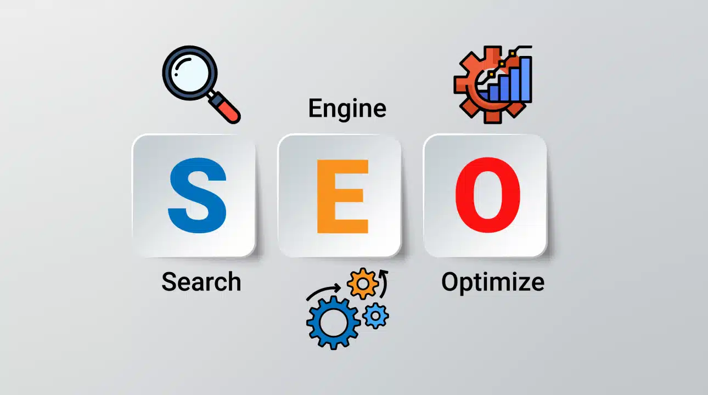

"WIPRO"
Over the past few years, I have gained valuable professional experience across diverse roles and industries.
With over three years of experience in digital marketing, I have developed a solid foundation in SEO, content strategy, and social media management. I have successfully led multiple campaigns that increased brand visibility and engagement across platforms.
I have worked on several high-impact technical projects, from developing scalable web applications to automating business processes using tools like Python and Excel.
My experience includes end-to-end project management—from planning and requirement gathering to implementation and testing. I take pride in delivering solutions that are not only functional but also user-friendly and efficient.

"SEO TOOL"
Throughout my career, I have had the opportunity to lead teams and mentor junior colleagues, helping them grow both personally and professionally. I believe in a collaborative leadership style that empowers others and fosters a culture of trust and innovation. This approach has consistently led to improved team performance and successful project outcomes.
- TCS
- Portal opened
- INFOSYS
- Portal will open in December
- Portal closed